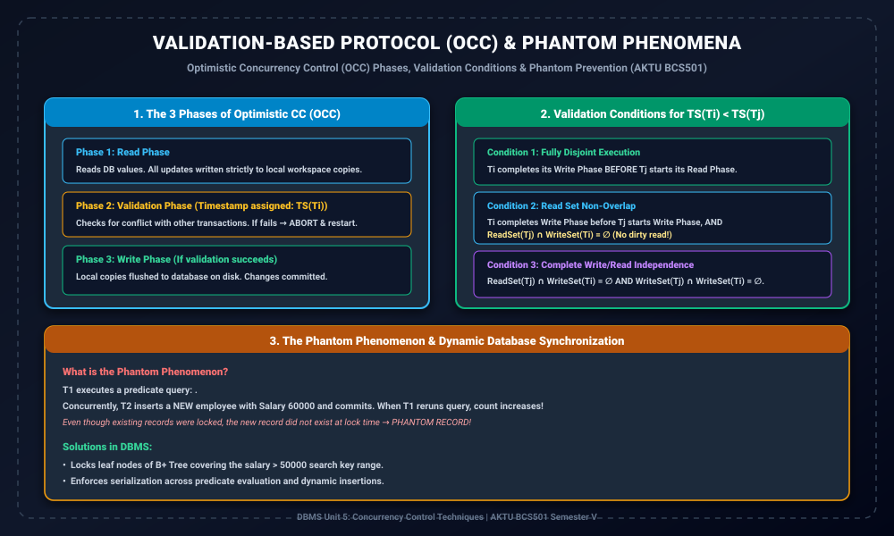

AKTU BCS501 | Unit 5: Concurrency Control Techniques

1. Read Phase: Reads DB and buffers updates locally in memory.
2. Validation Phase: Checks conflict conditions; assigns TS(T).
3. Write Phase: Commits updates to disk if validation passes.
Predicate queries (e.g., SELECT COUNT(*) WHERE Salary > 50k) can see phantom records if concurrent transactions insert new matching rows. Solved via Index-Range Locking on B+ Tree leaves or Predicate Locking.